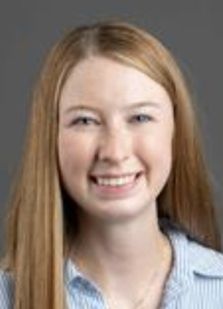

Kingsly Ambrose
Professor, Agricultural & Biological Engineering and University Faculty Scholar
Professor, Agricultural & Biological Engineering and University Faculty Scholar
Graduate Research Assistant, PhD Student
Research interests: DEM Simulation; Corn harvest damage
Graduate Research Assistant, PhD Student
Research interests: Granular fertilizer design; Environmental impact of fertilizer application

Graduate Research Assistant, PhD Student
Research interests: Powder Characterization; Particle dissolution
Graduate Research Assistant, PhD Student
Research interests: Biological engineering; Powder Characterization
Graduate Research Assistant, PhD Student
Research interests: DEM Simulation; Corn seed processing